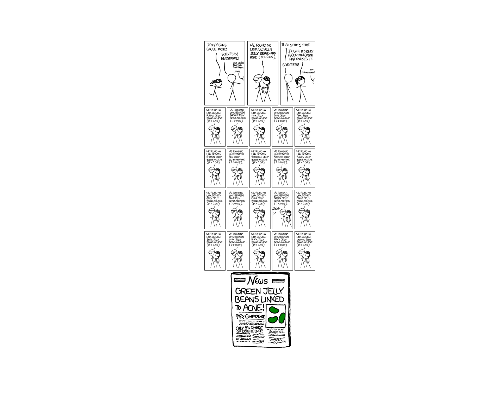
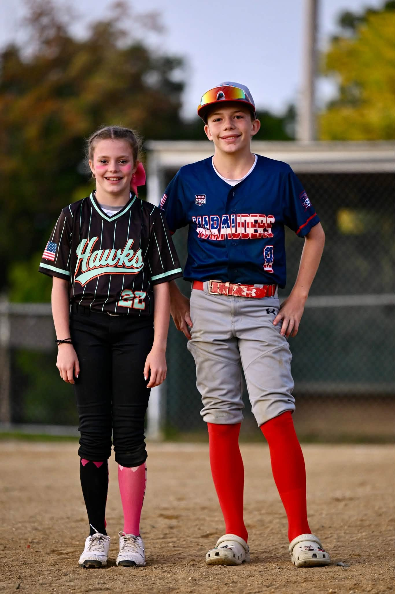
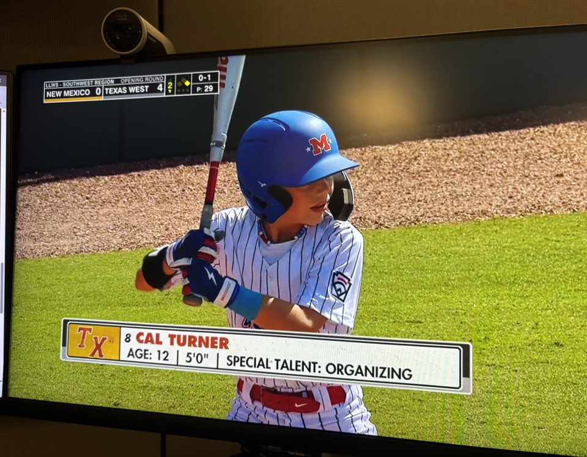
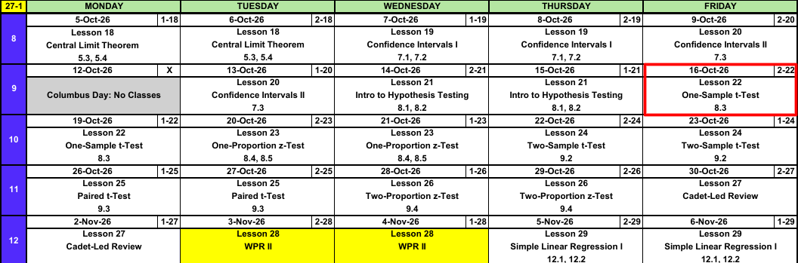
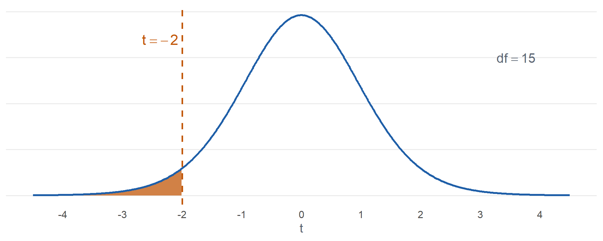
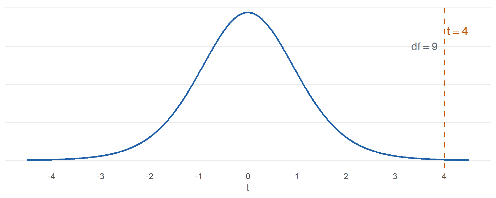
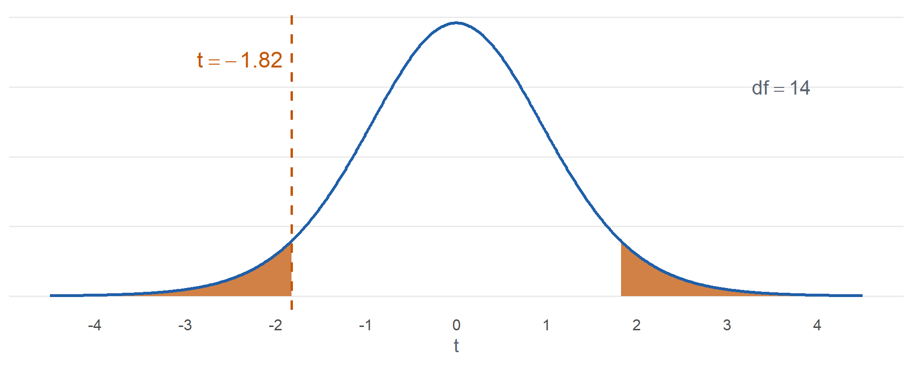
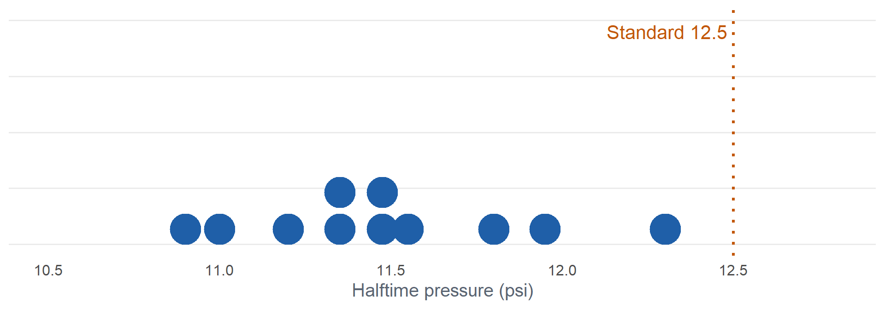
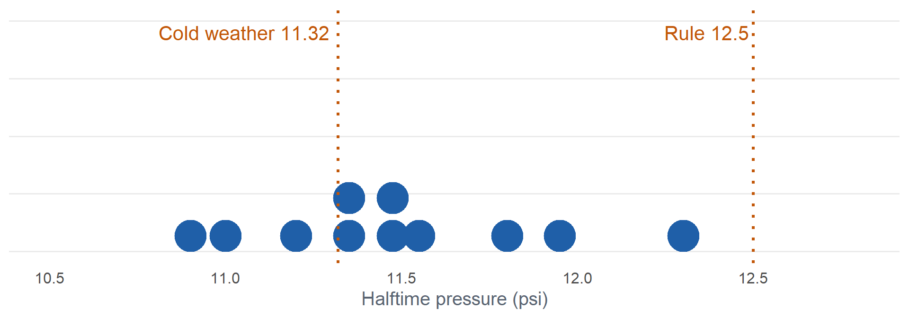
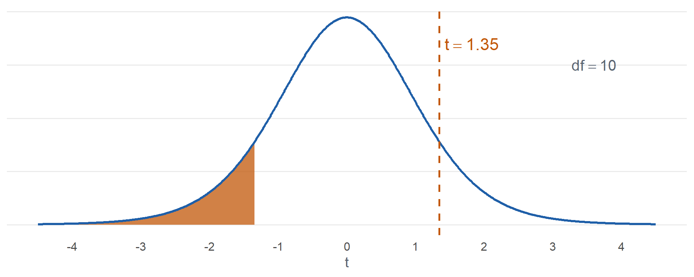

Lesson 22: One-Sample t-Test
Break!
Family


Calendar

What We Did: Lessons 18 to 21
NoteReview: Central Limit Theorem (Lesson 18)
- \(\bar{X} \sim N\left(\mu,\ \left(\dfrac{\sigma}{\sqrt{n}}\right)^2\right)\), approximately, for \(n > 40\)
- Normal population: exact for any \(n\)
pnorm(x, mu, sigma/sqrt(n))- \(\hat{p} \sim N\left(p,\ \dfrac{p(1-p)}{n}\right)\), approximately, when \(np \ge 10\) and \(n(1-p) \ge 10\)
NoteReview: Confidence Intervals I (Lesson 19)
- \(\text{estimate} \pm \text{critical value} \times \text{standard error}\)
- Mean, \(n > 40\): \(\bar{x} \pm z_{\alpha/2}\,\dfrac{s}{\sqrt{n}}\)
- Proportion, \(n\hat{p} \ge 10\) and \(n(1-\hat{p}) \ge 10\): \(\hat{p} \pm z_{\alpha/2}\sqrt{\dfrac{\hat{p}(1-\hat{p})}{n}}\)
qnorm(0.975)for 95%,qnorm(0.95)for 90%,qnorm(0.995)for 99%- 95% confident describes the method
NoteReview: Confidence Intervals II (Lesson 20)
- Small sample, normal population: \(\bar{x} \pm t_{\alpha/2,\,n-1}\,\dfrac{s}{\sqrt{n}}\)
- \(\text{df} = n - 1\),
qt(0.975, n - 1)for 95% - \(t_{\alpha/2,\,n-1} > z_{\alpha/2}\), so the \(t\) interval is wider
- Sample size for width \(w\): \(n = \left(\dfrac{2\,z_{\alpha/2}\,\sigma}{w}\right)^2\), rounded up
NoteReview: Intro to Hypothesis Testing (Lesson 21)
- \(H_0: \mu = \mu_0\) versus \(H_a\): \(\mu < \mu_0\), \(\mu > \mu_0\), or \(\mu \ne \mu_0\)
- \(z = \dfrac{\bar{x} - \mu_0}{s/\sqrt{n}}\), random sample, \(n > 40\)
- P-value:
pnorm(z),1 - pnorm(z),2 * pnorm(-abs(z)) - Reject \(H_0\) if the P-value is at or below \(\alpha\), otherwise fail to reject
- Type I: reject a true \(H_0\) (\(\alpha\)). Type II: fail to reject a false \(H_0\) (\(\beta\))
- Fail to reject is not accept
What We’re Doing: Lesson 22
Objectives
- State and check the assumptions of the one-sample \(t\) test. (SLO 5)
- Carry out a one-sample \(t\) test for a population mean. (SLO 5)
- Relate the test conclusion to the corresponding confidence interval: a two-sided test rejects at level \(\alpha\) exactly when the null value lies outside the \(1-\alpha\) interval, and the null value falls on an endpoint when the P-value equals \(\alpha\). (SLO 5, 6)
Required Reading
Devore 8.3
The Takeaway for Today
NoteKey Concepts from Lesson 22
- Test statistic: \(t = \dfrac{\bar{x} - \mu_0}{s/\sqrt{n}}\), \(\text{df} = n - 1\)
- Conditions: random sample, population approximately normal
- P-value:
pt(t, n - 1),1 - pt(t, n - 1), or2 * pt(-abs(t), n - 1)
Warm-Up
Ruck March
The 12 mile ruck standard is \(180\) minutes. Are cadets faster than the standard? A random sample of \(64\) cadets: \(\bar{x} = 176\) minutes, \(s = 16\) minutes. Test at \(\alpha = 0.05\).
1. Hypotheses: State \(H_0\) and \(H_a\).
TipAnswer
\[H_0: \mu = 180\]
\[H_a: \mu < 180\]
\(\mu\) is the true mean 12 mile ruck time of all cadets.
2. Conditions: What conditions allow us to do this?
TipAnswer
Random sample. \(n = 64 > 40\).
3. Test statistic: Compute it.
TipAnswer
\[z = \frac{\bar{x} - \mu_0}{s/\sqrt{n}}\]
\[z = \frac{176 - 180}{16/\sqrt{64}} = \frac{-4}{2} = \mathbf{-2.00}\]
4. P-value: Find it.
TipAnswer
\[P(Z \le -2.00) = \mathbf{0.0228}\]
pnorm(-2)
5. Decision: Reject or fail to reject?
TipAnswer
\(0.0228 \le 0.05\). Reject \(H_0\).
6. Conclusion: State it in context.
TipAnswer
Since the P-value \(0.0228 \le \alpha = 0.05\), reject \(H_0\). At the 5% level there is sufficient evidence that the true mean 12 mile ruck time of all cadets is less than 180 minutes.
What If \(n\) Is Small?
Ruck March, 16 Cadets
The 12 mile ruck standard is \(180\) minutes. Are cadets faster than the standard? A random sample of \(16\) cadets: \(\bar{x} = 174\) minutes, \(s = 12\) minutes. Test at \(\alpha = 0.05\).
What assumption do we violate?
TipAnswer
\(n > 40\). With \(n = 16\) we cannot lean on the CLT, so \(z\) is not justified.
How can we handle it?
What did we do for the confidence interval?
TipAnswer
We went from \(z\) to \(t\).
\[\bar{x} \pm z_{\alpha/2}\,\frac{s}{\sqrt{n}} \quad \longrightarrow \quad \bar{x} \pm t_{\alpha/2,\,n-1}\,\frac{s}{\sqrt{n}}\]
Same for the test.
To do this we have to make another assumption: the underlying distribution is normal.
ImportantOne-Sample \(t\) Test
\[t = \frac{\bar{x} - \mu_0}{s/\sqrt{n}}, \qquad \text{df} = n - 1\]
- Conditions: random sample, population approximately normal
- If \(H_0\) is true, \(T \sim t_{n-1}\)
- Same hypotheses and steps as the \(z\) test
| \(H_a\) | P-value |
|---|---|
| \(\mu > \mu_0\) | 1 - pt(t, n - 1) |
| \(\mu < \mu_0\) | pt(t, n - 1) |
| \(\mu \ne \mu_0\) | 2 * pt(-abs(t), n - 1) |
Ruck march, \(16\) cadets:
1. Hypotheses
\[H_0: \mu = 180\]
\[H_a: \mu < 180\]
\(\mu\) is the true mean 12 mile ruck time of all cadets.
2. Conditions
Random sample. \(n = 16 \le 40\), so we assume ruck times are normal.
3. Test statistic
\[t = \frac{\bar{x} - \mu_0}{s/\sqrt{n}}\]
\[t = \frac{174 - 180}{12/\sqrt{16}} = \frac{-6}{3} = \mathbf{-2.00}\]
\[\text{df} = 16 - 1 = 15\]
4. P-value

\[P(T \le -2.00) = \mathbf{0.0320}\]
pt(-2, 15)
5. Decision
\(0.0320 \le 0.05\). Reject \(H_0\).
6. Conclusion
Since the P-value \(0.0320 \le \alpha = 0.05\), reject \(H_0\). At the 5% level there is sufficient evidence that the true mean 12 mile ruck time of all cadets is less than 180 minutes.
The Steps
NoteHypothesis Test Steps
- Hypotheses: \(H_0\) and \(H_a\), in terms of the parameter
- Conditions
- Test statistic
- P-value
- Decision: reject \(H_0\) if the P-value is at or below \(\alpha\), otherwise fail to reject
- Conclusion in context
Ruck Weight
Each ruck is packed to a \(35\) lb standard. The S4 suspects the rucks are heavier. A random sample of \(10\) rucks, in lb:
36.2, 35.8, 37.1, 34.9, 36.5, 35.4, 37.8, 36.0, 35.1, 36.9
Ruck weights are approximately normal. Test at \(\alpha = 0.10\).
1. Hypotheses: State \(H_0\) and \(H_a\).
TipAnswer
\[H_0: \mu = 35\]
\[H_a: \mu > 35\]
\(\mu\) is the true mean weight of all rucks.
2. Conditions: What conditions allow us to do this?
TipAnswer
Random sample. \(n = 10 \le 40\), so we assume ruck weights are normal.
3. Test statistic: Compute it.
TipAnswer
\(\bar{x} = 36.17\), \(s = 0.9238\)
\[t = \frac{\bar{x} - \mu_0}{s/\sqrt{n}}\]
\[t = \frac{36.17 - 35}{0.9238/\sqrt{10}} = \mathbf{4.00}\]
\[\text{df} = 10 - 1 = 9\]
4. P-value: Find it.
TipAnswer

\[P(T \ge 4.00) = \mathbf{0.0015}\]
1 - pt(4.005, 9)
5. Decision: Reject or fail to reject?
TipAnswer
\(0.0015 \le 0.10\). Reject \(H_0\).
6. Conclusion: State it in context.
TipAnswer
Since the P-value \(0.0015 \le \alpha = 0.10\), reject \(H_0\). At the 10% level there is sufficient evidence that the true mean weight of all rucks is greater than 35 lb.
Range Day
The qualification standard is a mean of \(35\) hits out of \(40\). Is the battalion’s mean different? A random sample of \(15\) Soldiers:
29, 36, 31, 38, 33, 30, 35, 37, 28, 34, 32, 39, 33, 36, 30
Scores are approximately normal. Test at \(\alpha = 0.05\).
1. Hypotheses: State \(H_0\) and \(H_a\).
TipAnswer
\[H_0: \mu = 35\]
\[H_a: \mu \ne 35\]
\(\mu\) is the true mean hits of all Soldiers in the battalion.
2. Conditions: What conditions allow us to do this?
TipAnswer
Random sample. \(n = 15 \le 40\), so we assume scores are normal.
3. Test statistic: Compute it.
TipAnswer
\(\bar{x} = 33.4\), \(s = 3.3975\)
\[t = \frac{\bar{x} - \mu_0}{s/\sqrt{n}}\]
\[t = \frac{33.4 - 35}{3.3975/\sqrt{15}} = \mathbf{-1.82}\]
\[\text{df} = 15 - 1 = 14\]
4. P-value: Find it.
TipAnswer

\[2\,P(T \ge \lvert -1.82 \rvert) = \mathbf{0.0896}\]
2 * pt(-abs(-1.824), 14)
5. Decision: Reject or fail to reject?
TipAnswer
\(0.0896 > 0.05\). Fail to reject \(H_0\).
6. Conclusion: State it in context.
TipAnswer
Since the P-value \(0.0896 > \alpha = 0.05\), fail to reject \(H_0\). At the 5% level there is insufficient evidence that the true mean hits of all Soldiers in the battalion differs from 35.
In R
One Sample t-test
data: x
t = -1.8239, df = 14, p-value = 0.08958
alternative hypothesis: true mean is not equal to 35
95 percent confidence interval:
31.51854 35.28146
sample estimates:
mean of x
33.4 alternative = "greater","less", or"two.sided"- Same \(t\), df, and P-value
- It also gives the 95% confidence interval
Deflated Footballs
Purely hypothetically, suppose a famous quarterback is accused of playing with footballs below the allowable pressure. The rule: at least \(12.5\) psi. At halftime the officials measure \(11\) of his footballs:
11.80, 11.20, 11.50, 11.00, 11.45, 11.95, 12.30, 11.55, 11.35, 10.90, 11.35

Test at \(\alpha = 0.05\).
1. Hypotheses: State \(H_0\) and \(H_a\).
TipAnswer
\[H_0: \mu = 12.5\]
\[H_a: \mu < 12.5\]
\(\mu\) is the true mean halftime pressure of his footballs.
2. Conditions: What conditions allow us to do this?
TipAnswer
Treat the \(11\) balls as a random sample. \(n = 11 \le 40\), so we assume pressures are normal.
3. Test statistic: Compute it.
TipAnswer
\(\bar{x} = 11.4864\), \(s = 0.4099\)
\[t = \frac{\bar{x} - \mu_0}{s/\sqrt{n}}\]
\[t = \frac{11.4864 - 12.5}{0.4099/\sqrt{11}} = \mathbf{-8.20}\]
\[\text{df} = 11 - 1 = 10\]
4. P-value: Find it.
TipAnswer
\[P(T \le -8.20) = \mathbf{0.000005}\]
pt(-8.20, 10)
5. Decision: Reject or fail to reject?
TipAnswer
\(0.000005 \le 0.05\). Reject \(H_0\).
6. Conclusion: State it in context.
TipAnswer
Since the P-value \(0.000005 \le \alpha = 0.05\), reject \(H_0\). At the 5% level there is sufficient evidence that the true mean halftime pressure of his footballs is less than 12.5 psi.
These are the real numbers: 2015 AFC Championship, Patriots footballs, from the NFL’s Wells Report.
What If We Used Another Standard?
- The balls were set to \(12.5\) psi in a locker room at about \(71°\)F
- The game was played at about \(48°\)F
- Cold air loses pressure (ideal gas law): a \(12.5\) psi ball that nobody touched should read about \(\mathbf{11.32}\) psi at halftime

Test at \(\alpha = 0.05\).
1. Hypotheses: State \(H_0\) and \(H_a\).
TipAnswer
\[H_0: \mu = 11.32\]
\[H_a: \mu < 11.32\]
\(\mu\) is the true mean halftime pressure of his footballs.
2. Conditions: What conditions allow us to do this?
TipAnswer
Treat the \(11\) balls as a random sample. \(n = 11 \le 40\), so we assume pressures are normal.
3. Test statistic: Compute it.
TipAnswer
\(\bar{x} = 11.4864\), \(s = 0.4099\)
\[t = \frac{\bar{x} - \mu_0}{s/\sqrt{n}}\]
\[t = \frac{11.4864 - 11.32}{0.4099/\sqrt{11}} = \mathbf{1.35}\]
\[\text{df} = 11 - 1 = 10\]
4. P-value: Find it.
TipAnswer

\[P(T \le 1.35) = \mathbf{0.8960}\]
pt(1.35, 10)
5. Decision: Reject or fail to reject?
TipAnswer
\(0.8960 > 0.05\). Fail to reject \(H_0\).
6. Conclusion: State it in context.
TipAnswer
Since the P-value \(0.8960 > \alpha = 0.05\), fail to reject \(H_0\). At the 5% level there is insufficient evidence that the true mean halftime pressure of his footballs is less than 11.32 psi, the pressure cold weather alone explains.
Inference Procedures
| Parameter | Conditions | Test statistic | Confidence interval | Critical value | P-value by \(H_a\) |
|---|---|---|---|---|---|
| \(\mu\) \(\sigma\) known, or \(\sigma\) unknown and \(n > 40\) |
Random sample \(\sigma\) known and population normal, or \(n > 40\) |
\(z = \dfrac{\bar{x} - \mu_0}{\sigma/\sqrt{n}}\) use \(s\) for \(\sigma\) when \(n > 40\) |
\(\bar{x} \pm z_{\alpha/2}\dfrac{\sigma}{\sqrt{n}}\) | qnorm(1-a/2) |
\(>\) 1-pnorm(z)\(<\) pnorm(z)\(\ne\) 2*pnorm(-abs(z)) |
| \(\mu\) \(\sigma\) unknown, \(n \le 40\) |
Random sample Population approx. normal |
\(t = \dfrac{\bar{x} - \mu_0}{s/\sqrt{n}} \sim t_{n-1}\) | \(\bar{x} \pm t_{\alpha/2,\,n-1}\dfrac{s}{\sqrt{n}}\) | qt(1-a/2,n-1) |
\(>\) 1-pt(t,n-1)\(<\) pt(t,n-1)\(\ne\) 2*pt(-abs(t),n-1) |
| \(p\) | Random sample \(np_0 \ge 10\) \(n(1-p_0) \ge 10\) |
\(z = \dfrac{\hat{p} - p_0}{\sqrt{p_0(1-p_0)/n}}\) the test uses \(p_0\) |
\(\hat{p} \pm z_{\alpha/2}\sqrt{\dfrac{\hat{p}(1-\hat{p})}{n}}\) the interval uses \(\hat{p}\) |
qnorm(1-a/2) |
\(>\) 1-pnorm(z)\(<\) pnorm(z)\(\ne\) 2*pnorm(-abs(z)) |
| \(\mu_1 - \mu_2\) independent |
|||||
| \(\mu_D\) paired |
|||||
| \(p_1 - p_2\) |
Board Problems
Problem 1: Which Test?
NoteQuestions
For each, choose the \(z\) test, the \(t\) test, or neither.
A random sample of \(80\) cadets, testing the mean ACFT score.
A random sample of \(12\) cadets, testing the mean pull-ups. Pull-ups are approximately normal.
A random sample of \(9\) cadets, testing the mean hours on social media per week. Hours are strongly right skewed, with one cadet at \(60\) hours.
A random sample of \(25\) cadets, testing the mean sleep. Sleep is known to be approximately normal.
TipAnswers
\(z\) test. Random sample, \(n = 80 > 40\).
\(t\) test. \(n = 12 \le 40\), population approximately normal.
Neither. \(n = 9 \le 40\) and the population is not normal.
\(t\) test. \(\sigma\) unknown, \(n = 25 \le 40\), population approximately normal.
Problem 2: Radio Batteries
Radio batteries are rated for \(20\) hours. The commo section thinks they die sooner. A random sample of \(12\) batteries: \(\bar{x} = 18.9\) hours, \(s = 2.1\) hours. Battery life is approximately normal. Test at \(\alpha = 0.05\).
NoteQuestions
State the hypotheses.
What conditions allow us to do this?
Compute the test statistic and df.
State the rejection region. Is \(t\) in it?
Find the P-value.
Decide and conclude.
What P-value would you get with
pnorminstead? Why is it smaller?
TipAnswers
- \[H_0: \mu = 20\]
\[H_a: \mu < 20\]
\(\mu\) is the true mean life of all radio batteries.
Random sample. Battery life is approximately normal.
\[t = \frac{\bar{x} - \mu_0}{s/\sqrt{n}}\]
\[t = \frac{18.9 - 20}{2.1/\sqrt{12}} = \mathbf{-1.81}\]
\[\text{df} = 12 - 1 = 11\]
(18.9 - 20) / (2.1 / sqrt(12))
Reject \(H_0\) if \(t \le -1.796\).
qt(0.05, 11). Yes, \(-1.81 \le -1.796\).\[P(T \le -1.81) = \mathbf{0.0485}\]
pt(-1.815, 11)
Since the P-value \(0.0485 \le \alpha = 0.05\), reject \(H_0\). At the 5% level there is sufficient evidence that the true mean life of all radio batteries is less than 20 hours.
pnorm(-1.815)\(= 0.0348\). The \(t\) curve has heavier tails than \(Z\), so the \(t\) P-value is larger.
Problem 3: Parachute Packing
A rigger standard says a main canopy takes \(13\) minutes to pack. Is the mean different? A random sample of \(8\) packing times, in minutes:
14.2, 12.8, 15.9, 13.5, 16.4, 14.8, 13.1, 15.3
Packing times are approximately normal. Test at \(\alpha = 0.05\).
NoteQuestions
State the hypotheses.
What conditions allow us to do this?
Find \(\bar{x}\), \(s\), and the test statistic.
Find the P-value.
Decide and conclude.
Build a 95% confidence interval for \(\mu\). Does it agree with your decision?
TipAnswers
- \[H_0: \mu = 13\]
\[H_a: \mu \ne 13\]
\(\mu\) is the true mean packing time of all main canopies.
Random sample. \(n = 8 \le 40\), so we assume packing times are normal.
\(\bar{x} = 14.5\), \(s = 1.3223\)
\[t = \frac{\bar{x} - \mu_0}{s/\sqrt{n}}\]
\[t = \frac{14.5 - 13}{1.3223/\sqrt{8}} = \mathbf{3.21}, \qquad \text{df} = 7\]
- \[2\,P(T \ge 3.21) = \mathbf{0.0149}\]
2 * pt(-abs(3.208), 7)
Since the P-value \(0.0149 \le \alpha = 0.05\), reject \(H_0\). At the 5% level there is sufficient evidence that the true mean packing time of all main canopies differs from 13 minutes.
\[14.5 \pm 2.365\,\frac{1.3223}{\sqrt{8}} = (\mathbf{13.39},\ \mathbf{15.61})\]
t.test(x, mu = 13)
Yes. \(13\) is outside the interval, and we rejected.
Problem 4: Interval to Test
A random sample of \(20\) cadets gives a 95% confidence interval for mean daily water intake of \((2.4,\ 3.1)\) liters.
NoteQuestions
Test \(H_0: \mu = 3\) versus \(H_a: \mu \ne 3\) at \(\alpha = 0.05\). Decision?
Test \(H_0: \mu = 3.5\) versus \(H_a: \mu \ne 3.5\) at \(\alpha = 0.05\). Decision?
For which null value would the P-value be exactly \(0.05\)?
Can this interval decide a test at \(\alpha = 0.01\)?
TipAnswers
Fail to reject. \(3\) is inside the interval.
Reject. \(3.5\) is outside the interval.
\(2.4\) or \(3.1\), the endpoints.
Not always. \(\alpha = 0.01\) pairs with a 99% interval, which is wider. A value outside the 99% interval is also outside the 95% one, but not the other way around.
Before You Leave
Today
- \(t = \dfrac{\bar{x} - \mu_0}{s/\sqrt{n}}\), \(\text{df} = n - 1\)
- Random sample, population approximately normal
- P-value:
pt(t, n - 1),1 - pt(t, n - 1),2 * pt(-abs(t), n - 1) t.test(x, mu = mu0, alternative = "two.sided")
Any questions?
Next Lesson
Lesson 23: One-Proportion z-Test
- Check the large-sample conditions for inference on a proportion
- Carry out a large-sample \(z\) test for a population proportion
- Distinguish statistical significance from practical significance
Reading: Devore 8.4, 8.5
Upcoming Graded Events
- WebAssign 8.3: due at the start of Lesson 23
- EDA: due 18 October
- WPR II: Lesson 28 (covers Lessons 18-26)
- TEE: 15-18 Dec 2026